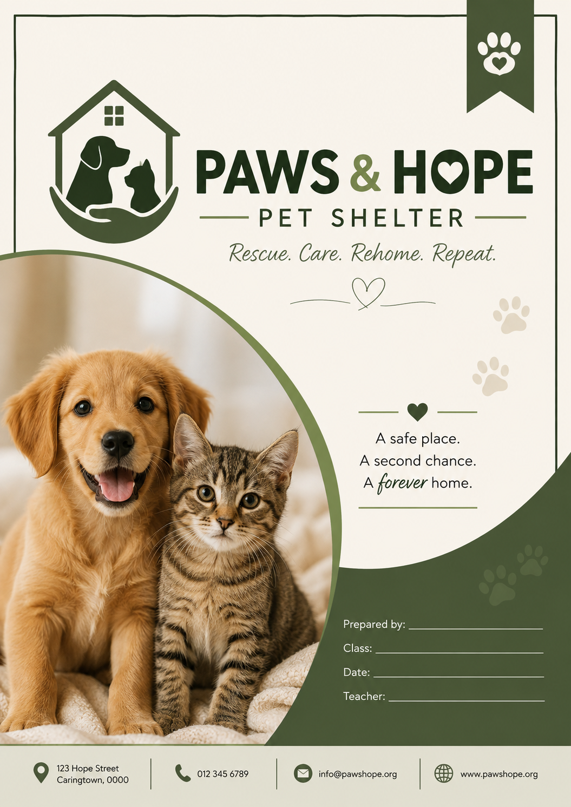
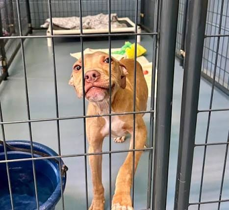
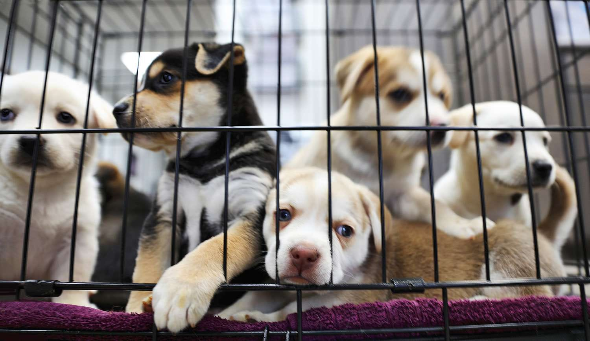
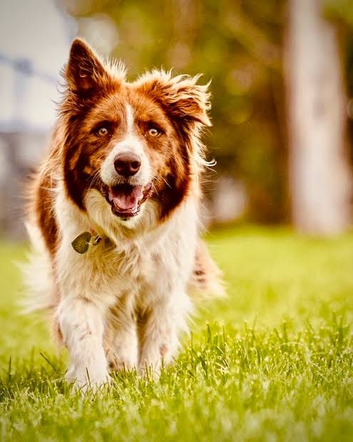

Welcome to Paw Shelter
Come explore and adopt your own best friend within the walls of our sensational Shelter. We are based in Durban, KZN and we rescue dogs and cats every day.
Our shelter was founded in 2020 to give street animals a second chance.
🐶 Dogs Ready for Adoption
These dogs were rescued and are now healthy, vaccinated and waiting for loving homes.





What We Do
🐾 Rescue
We rescue abandoned and abused pets daily around Durban. Call us 24/7 on 068 443 2036.
🏠 Adoption
Adoption fee R200 includes vaccination and health check. Find your forever friend today.
💛 Care & Love
We provide food, medical care, grooming and lots of love until they find a home.
Why Choose Paw Shelter?
- Over 500 dogs rescued since 2020
- Located in Durban, KZN - open everyday
- All dogs vaccinated and checked by vet
- We also have clothing merch to support the shelter
Visit Us
Hours: Mon-Fri 07:00-18:00 | Sat-Sun 09:00-16:00
Phone: 068 443 2036 | Email: info@pawshelter.co.za
We are open everyday, come meet the dogs!